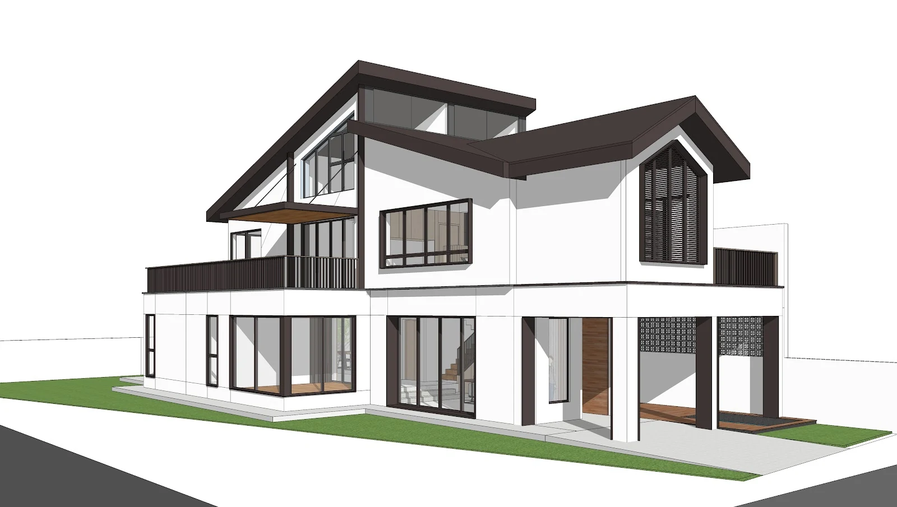

Lentor · Concept proposal
Courtyard House
- Location
- Lentor
- Typology
- Landed residential
- Area
- 460 m²
- Scope
- Architectural
- Status
- Concept proposal
Corner plots give you something most terraces never have: a second face to the street, and the light that comes with it.
The proposal turns the house inward around a courtyard, so that rooms borrow light and air from the middle of the plan rather than competing for the perimeter. A pitched roof carries the form back to its neighbours.